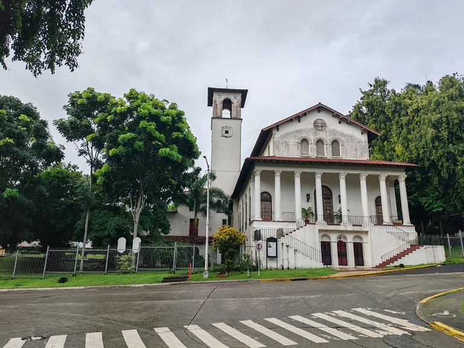
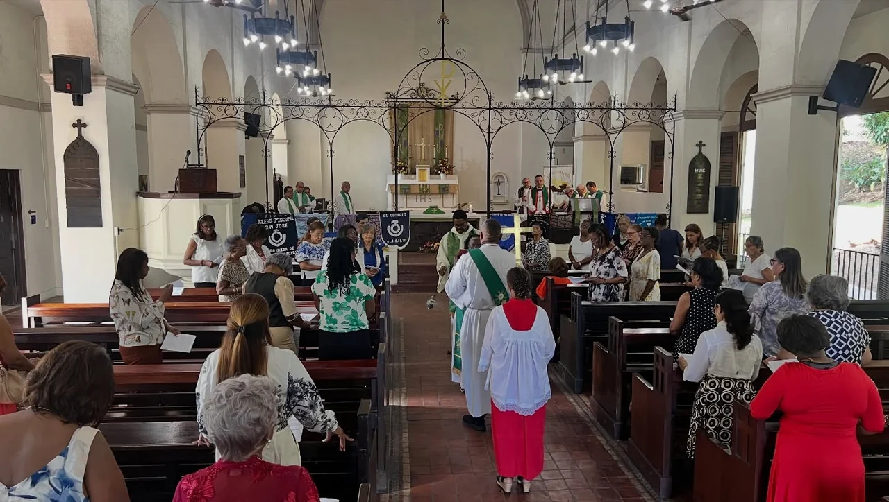
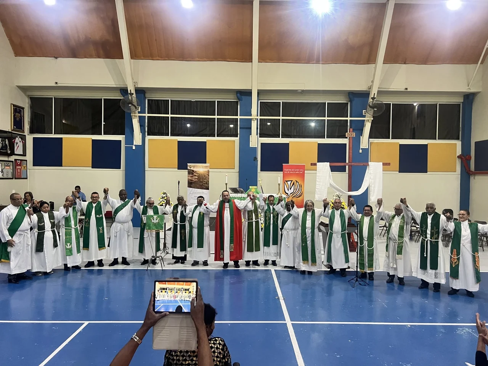
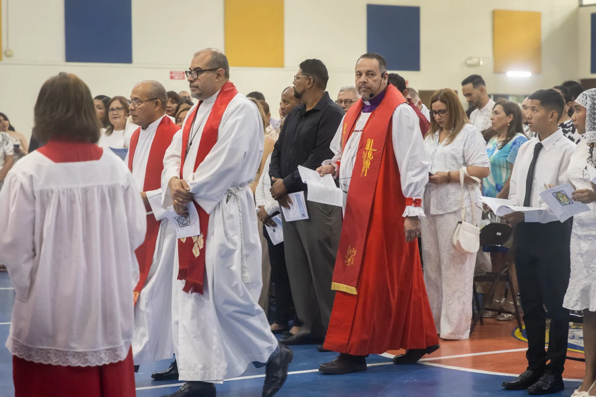

Vida de fe
La oración y la vida parroquial reúnen a nuestras comunidades en torno a la fe cristiana y la tradición anglicana.
Fe · Servicio · Comunidad
Una comunidad cristiana de tradición anglicana, con raíces históricas en Panamá y una vocación de fe, formación y servicio.
Conózcanos
La presencia anglicana en Panamá se remonta a mediados del siglo XIX. Hoy, esa tradición continúa en la vida de nuestras parroquias y misiones.

La Iglesia Episcopal de Panamá es una organización religiosa cristiana de tradición anglicana. Nuestra identidad se expresa en la oración, la vida en comunidad y el acompañamiento pastoral.
Formamos parte de la Iglesia Anglicana de la Región Central de América (IARCA), dentro de la Comunión Anglicana.
La vida y misión de la Iglesia se expresan a través de sus parroquias y misiones, el acompañamiento pastoral, la formación cristiana, la educación y el servicio a las comunidades.
La oración y la vida parroquial reúnen a nuestras comunidades en torno a la fe cristiana y la tradición anglicana.
La formación cristiana y la educación acompañan el crecimiento de las personas y fortalecen la vida en comunidad.
El acompañamiento pastoral y el apoyo comunitario expresan nuestra vocación de servir desde las parroquias y misiones.
Nuestras parroquias y misiones forman una presencia compartida en diferentes regiones del país.
La Iglesia Episcopal de Panamá mantiene una tradición educativa como parte de su vida y servicio. Estas instituciones forman parte de esa presencia en el país.
El servicio nace de la vida de nuestras comunidades. A través de las parroquias y misiones, la Iglesia ofrece acompañamiento pastoral, formación y apoyo comunitario, fortaleciendo los vínculos entre las personas.


Iglesia Episcopal de Panamá
Diócesis de Panamá
Comuníquese con nuestra Secretaría para información institucional y consultas sobre nuestras comunidades.
0843-01258
Panamá, República de Panamá